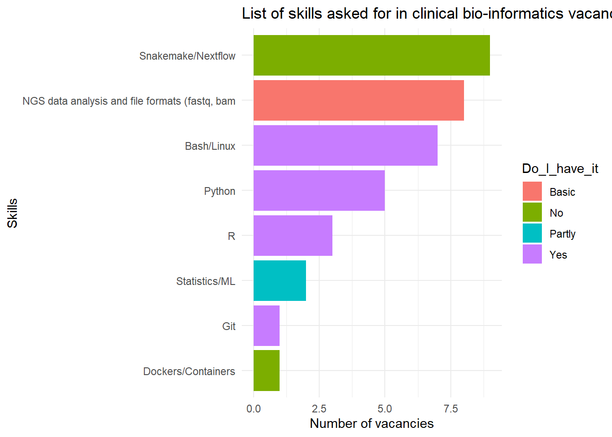

3 Journey to becoming a clinical bioinformatician
3.1 Where I want to be in 1-2 years
In one to two years I want to work as a junior clinical bioinformatician or a NGS molecular diagnostics specialist at a hospital or research institute analysing RNA seq and clinical data to answer questions about ….
3.2 Where I stand now
To see where my skills compare with what employers ask for, I analysed 17 vacancies (11 in the Netherlands and 6 abroad) for (junior) bio-informaticians and noted which skills each one requires
library(tidyverse)
Vacancy_skillset <- tibble(
skills = c("Python", "R", "Bash/Linux", "Git", "Statistics/ML", "Snakemake/Nextflow", "Dockers/Containers", "NGS data analysis and file formats (fastq, bam"),
frequency_in_vacancies = c(5, 3, 7, 1, 2, 9, 1, 8),
Do_I_have_it = c("Yes", "Yes", "Yes", "Yes", "Partly", "No", "No", "Basic"))
Vacancy_skillset## # A tibble: 8 × 3
## skills frequency_in_vacancies Do_I_have_it
## <chr> <dbl> <chr>
## 1 Python 5 Yes
## 2 R 3 Yes
## 3 Bash/Linux 7 Yes
## 4 Git 1 Yes
## 5 Statistics/ML 2 Partly
## 6 Snakemake/Nextflow 9 No
## 7 Dockers/Containers 1 No
## 8 NGS data analysis and file formats (fastq, bam 8 Basicggplot(Vacancy_skillset, aes(x = reorder(skills, frequency_in_vacancies), y = frequency_in_vacancies, fill = Do_I_have_it)) +
geom_col() +
coord_flip() +
labs(title = "List of skills asked for in clinical bio-informatics vacancies",
x = "Skills",
y = "Number of vacancies") +
theme_minimal()
3.3 Current Strenghts
On the data side I work in R (RNA-seq analysis, metagenomics, GO enrichment), Python and Bash, and I use Git and RMarkdown for reproducible reporting. On the lab side I have hands-on experience with SDS-PAGE, Western blot, BCA assays, PCR and sterile technique, which helps me understand how the data I analyse is produced
3.3.1 Vacancies information
Most vacancies in that have a requirement for data science in research, biotech, diagnostics ask for knowledge in python, R and statistics/machine learning and experience with snakemake or Nextflow. For example a vacancy in Amsterdam UMC (genome diagnostics) asks for Python, familiarity with quality assurance systems and ISO standards, and willingness to work with Linux and HPC while a UMC Groningen vacancy asks for experience with Snakemake or Nextflow plus knowledge of data stewardship rules, Erasmus MC asks for Python or Java and Nextflow or Snakemake, and Maastricht UMC+ lists HPC, Linux, SLURM and Snakemake/Nextflow.
3.4 What I still want to learn
Out of the 17 vacancies most ask for experience in snakemake and nextflow. However for this course I will be tackling machine learning/statistics and using that on NGS data analysis. I chose machine learning first I cause I am curious about what expression data can predict, and it builds on the R/Python skills I already have. Aside from that by using the machine learning skill on for NGS data analysis, which is also one of the most requested skills, I will have a complete and full skillset